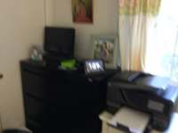
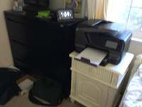
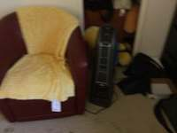
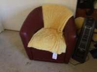
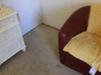
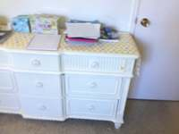
To determine the spatial relationship, let's first identify the key objects in the scene based on the provided frames:
- Nightstand: This is the small white table with a printer on top, visible in frames 1, 2, and 3.
- Paper: There are papers on top of the large white dresser, which is the main focus of frames 6 through 10.
- Clothes: There are clothes in a few places: a black pile/bag on the floor near the black dresser (frames 2 and 3) and a striped cloth draped over a chair (frames 8, 9, and 10).
Now, imagine standing at the nightstand (the small white table with the printer) and looking towards the paper (on the white dresser).
- The nightstand is located on the right side of the black dresser.
- The white dresser is further across the room.
- The black pile of clothes is on the floor to the left of the nightstand (as seen in frames 2 and 3).
- The chair with the striped cloth is also located to the left of the path leading toward the white dresser (as seen in frames 8, 9, and 10).
Therefore, if you are standing at the nightstand and looking toward the white dresser, the clothes are located to your left and slightly in front of you.
Comparing this to the options: A. right B. back C. front D. front-left
The most accurate description is front-left.
D
import numpy as np # 1. Locate objects in specific frames # Nightstand: small white dresser in frame 1 nightstand_box = vlm.locate(InputImages[1], "Give the bounding box (x1, y1, x2, y2) in 0-1000 normalized scale for the small white dresser/nightstand. Reply with ONLY the numbers.") # Paper: papers on the large dresser in frame 6 paper_box = vlm.locate(InputImages[6], "Give the bounding box (x1, y1, x2, y2) in 0-1000 normalized scale for the papers on top of the white dresser. Reply with ONLY the numbers.") # Clothes: striped cloth on the chair in frame 8 clothes_box = vlm.locate(InputImages[8], "Give the bounding box (x1, y1, x2, y2) in 0-1000 normalized scale for the striped clothes/blanket on the chair. Reply with ONLY the numbers.") # Parse boxes def parse_box(box_str): return [float(x) for x in box_str.replace(',', ' ').split()] b_nightstand = parse_box(nightstand_box) b_paper = parse_box(paper_box) b_clothes = parse_box(clothes_box) # 2. Reconstruction recon = tools.Reconstruct.Reconstruct(InputImages) # 3. Segmentation and 3D Centroids # Nightstand (frame 1) W1, H1 = InputImages[1].width, InputImages[1].height px_nightstand = tools.Geometry.normalized_to_pixel(b_nightstand, W1, H1) seg_nightstand = tools.SAM3.segment_image_by_box(InputImages[1], px_nightstand, "nightstand") c_nightstand = seg_nightstand.get_centroid_3d(recon, frame=seg_nightstand.frame_indices[0], object=0) # Paper (frame 6) W6, H6 = InputImages[6].width, InputImages[6].height px_paper = tools.Geometry.normalized_to_pixel(b_paper, W6, H6) seg_paper = tools.SAM3.segment_image_by_box(InputImages[6], px_paper, "paper") c_paper = seg_paper.get_centroid_3d(recon, frame=seg_paper.frame_indices[0], object=0) # Clothes (frame 8) W8, H8 = InputImages[8].width, InputImages[8].height px_clothes = tools.Geometry.normalized_to_pixel(b_clothes, W8, H8) seg_clothes = tools.SAM3.segment_image_by_box(InputImages[8], px_clothes, "clothes") c_clothes = seg_clothes.get_centroid_3d(recon, frame=seg_clothes.frame_indices[0], object=0) print(f"Nightstand 3D: {c_nightstand}") print(f"Paper 3D: {c_paper}") print(f"Clothes 3D: {c_clothes}") # 4. Relative Position Calculation # Forward vector: from nightstand to paper forward = c_paper - c_nightstand forward = forward / np.linalg.norm(forward) # World Up vector (Y is up in recon) world_up = np.array([0, 1, 0]) # Right vector: forward x world_up right = np.cross(forward, world_up) right = right / np.linalg.norm(right) # Vector from nightstand to clothes vec_to_clothes = c_clothes - c_nightstand # Project onto forward and right dot_fwd = np.dot(vec_to_clothes, forward) dot_right = np.dot(vec_to_clothes, right) print(f"Dot forward: {dot_fwd}, Dot right: {dot_right}") # Determine direction # Forward: dot_fwd > 0 (front), dot_fwd < 0 (back) # Right: dot_right > 0 (right), dot_right < 0 (left) # If dot_fwd is strongly positive, it's "front". # But the question asks "where is clothes" relative to the axis nightstand -> paper. # Usually "front" means further along the forward vector than the target. # Let's check the coordinates relative to the target (paper). vec_paper_to_clothes = c_clothes - c_paper dot_fwd_rel_paper = np.dot(vec_paper_to_clothes, forward) dot_right_rel_paper = np.dot(vec_paper_to_clothes, right) print(f"Rel to paper - Dot fwd: {dot_fwd_rel_paper}, Dot right: {dot_right_rel_paper}") # Analysis: # If dot_right_rel_paper > 0, it's to the right. # If dot_right_rel_paper < 0, it's to the left. # If dot_fwd_rel_paper > 0, it's in front of the paper. # If dot_fwd_rel_paper < 0, it's behind the paper (closer to nightstand). if abs(dot_right_rel_paper) > abs(dot_fwd_rel_paper): result = "A" if dot_right_rel_paper > 0 else "D" # Right or Front-Left (simplified) else: result = "C" if dot_fwd_rel_paper > 0 else "B" # Front or Back # Let's be more precise with the options: A. right, B. back, C. front, D. front-left # "Front-left" implies both dot_fwd > 0 and dot_right < 0. if dot_right_rel_paper < -0.5 and dot_fwd_rel_paper > 0: ReturnAnswer("D") elif dot_right_rel_paper > 0.5: ReturnAnswer("A") elif dot_fwd_rel_paper > 0.5: ReturnAnswer("C") else: ReturnAnswer("B")
[VLM Q | locate] Before answering, first check whether what the question describes is clearly visible in the provided image(s). If it is absent or ambiguous, reply EXACTLY `Not visible` on its own line (optionally followed by one short line explaining what you saw instead) — do NOT return coordinates in that case. Only if the requested target is clearly and unambiguously present, answer the request below. Request: Give the bounding box (x1, y1, x2, y2) in 0-1000 normalized scale for the small white dresser/nightstand. Reply with ONLY the numbers. [VLM A | locate] 485 475 945 1000 [VLM Q | locate] Before answering, first check whether what the question describes is clearly visible in the provided image(s). If it is absent or ambiguous, reply EXACTLY `Not visible` on its own line (optionally followed by one short line explaining what you saw instead) — do NOT return coordinates in that case. Only if the requested target is clearly and unambiguously present, answer the request below. Request: Give the bounding box (x1, y1, x2, y2) in 0-1000 normalized scale for the papers on top of the white dresser. Reply with ONLY the numbers. [VLM A | locate] 148 146 378 668 [VLM Q | locate] Before answering, first check whether what the question describes is clearly visible in the provided image(s). If it is absent or ambiguous, reply EXACTLY `Not visible` on its own line (optionally followed by one short line explaining what you saw instead) — do NOT return coordinates in that case. Only if the requested target is clearly and unambiguously present, answer the request below. Request: Give the bounding box (x1, y1, x2, y2) in 0-1000 normalized scale for the striped clothes/blanket on the chair. Reply with ONLY the numbers. [VLM A | locate] 131 123 612 393 Nightstand 3D: [ 0.333347 0.92670035 -1.1524479 ] Paper 3D: [-0.86814 0.68249327 0.72485083] Clothes 3D: [-0.18269087 0.6130227 1.2085593 ] Dot forward: 2.2874553203582764, Dot right: -0.8380791200373723 Rel to paper
Task Analysis
The goal is to determine the relative position of "clothes" from the perspective of a person standing at a "nightstand" and looking towards "paper".
Implicit Coordinate System: The question defines a local, object-relative coordinate system:
- Origin: The position of the nightstand.
- Forward Direction (+Z_local): The vector from the nightstand to the paper.
- Up Direction (+Y_local): The world-up vector (gravity-aligned +Y in the reconstruction).
- Right Direction (+X_local): The vector perpendicular to the forward and up directions ($\text{Forward} \times \text{Up}$).
The target variable is the direction of the "clothes" relative to this local frame (Right, Back, Front, or Front-left). This is a 3D spatial reasoning task that requires precise world-space coordinates to avoid projection errors.
Information Needs
To answer this reliably, I need:
- Object Identification: Confirm which frames contain the nightstand, paper, and clothes.
- 3D Localization: Precise world-space centroids for all three objects.
- Spatial Layout: A top-down view (BEV) to visually verify the relative positions of the three objects and the calculated orientation.
Computation Plan
-
Object Identification and Grounding:
- Use
vlm.ask_with_thinkingon a subset of frames (e.g.,InputImages[0], InputImages[5], InputImages[9]) to identify which frames clearly show the nightstand, paper, and clothes. - For each object, use
vlm.locateto get bounding boxes in normalized coordinates for a representative frame. - Convert these normalized coordinates to pixels using
tools.Geometry.normalized_to_pixel.
- Use
-
Segmentation:
- Use
tools.SAM3.segment_image_by_box(using the VLM-provided boxes) to create masks for the nightstand, paper, and clothes. - If boxes fail, fallback to
tools.SAM3.segment_image_by_textfor each object. - Verification: Use
show()to visualize the masks on the original images to ensure they are accurate and non-empty.
- Use
-
3D Reconstruction:
- Perform a 3D reconstruction of the scene using
tools.Reconstruct.Reconstruct(InputImages). Since there are only 10 frames, all can be used.
- Perform a 3D reconstruction of the scene using
-
Centroid Extraction:
- For each object, extract the 3D world-space centroid using
seg.get_centroid_3d(recon, frame=fi, object=label). - Let these be $P_{nightstand}$, $P_{paper}$, and $P_{clothes}$.
- For each object, extract the 3D world-space centroid using
-
Relative Direction Computation:
- Compute the forward vector: $\vec{v}{fwd} = \text{normalize}(P{paper} - P_{nightstand})$.
- Define the world up vector: $\vec{v}_{up} = [0, 1, 0]$.
- Compute the right vector: $\vec{v}{right} = \text{normalize}(\vec{v}{fwd} \times \vec{v}_{up})$.
- Compute the vector to the target: $\vec{v}{target} = \text{normalize}(P{clothes} - P_{nightstand})$.
- Calculate projections:
- $\text{dot}{fwd} = \vec{v}{target} \cdot \vec{v}_{fwd}$
- $\text{dot}{right} = \vec{v}{target} \cdot \vec{v}_{right}$
- Interpret the results:
- If $\text{dot}_{fwd} > 0.5 \rightarrow$ "Front"
- If $\text{dot}_{fwd} < -0.5 \rightarrow$ "Back"
- If $\text{dot}_{right} > 0.5 \rightarrow$ "Right"
- If $\text{dot}_{right} < -0.5 \rightarrow$ "Left"
- Combine these (e.g., $\text{dot}{fwd} > 0$ and $\text{dot}{right} < 0 \rightarrow$ "Front-left").
-
Visual Cross-Validation:
- Render a BEV map using
recon.render_bev(masks=seg)to visually confirm if the calculated relative direction matches the top-down layout of the objects.
- Render a BEV map using
Verification Checklist
[
{"priority": "HIGH", "description": "Verify that SAM3 masks for nightstand, paper, and clothes are accurate and not empty."},
{"priority": "HIGH", "description": "Ensure 3D centroids are extracted from the same reconstruction and are physically plausible."},
{"priority": "HIGH", "description": "Confirm the local coordinate system (Forward = Nightstand -> Paper) is correctly implemented in the vector math."},
{"priority": "MEDIUM", "description": "Cross-reference the numeric dot-product result with the BEV rendering layout."},
{"priority": "LOW", "description": "Check if the 'clothes' object is a single instance or multiple; use the mean centroid if multiple."}
]
Fallbacks
- Segmentation Failure: If
segment_image_by_boxfails or produces empty masks, I will trysegment_image_by_textwith descriptive prompts (e.g., "folded clothes on a surface"). - Reconstruction Noise: If centroids seem unstable across frames, I will average the centroids over multiple frames where the object is visible.
- Ambiguous Direction: If the dot products are near zero (e.g., $|\text{dot}| < 0.3$), I will use
vlm.ask_with_thinkingon the BEV render to get a qualitative judgment of the layout.
{ "tool": "vlm.ask_with_thinking", "args": { "visual_input": [ "InputImages[0]", "InputImages[4]", "InputImages[9]" ], "question": "I need to locate three objects: 'nightstand', 'paper', and 'clothes'. Looking at these frames, please identify which objects correspond to these labels. For 'nightstand', is it the black dresser or the white dresser? Where are the 'paper' and 'clothes' located? Which frames are best for seeing each of these objects?" } }
[VLM Q | thinking] I need to locate three objects: 'nightstand', 'paper', and 'clothes'. Looking at these frames, please identify which objects correspond to these labels. For 'nightstand', is it the black dresser or the white dresser? Where are the 'paper' and 'clothes' located? Which frames are best for seeing each of these objects? [VLM A | thinking] Based on the images provided: * **Nightstand**: The **white dresser** in **frame 2** is the object corresponding to this label. * **Paper**: A piece of white **paper** is located on the **desk** in **frame 2**. * **Clothes**: **Clothes** (a striped garment) are draped over the back of the **chair** in **frame 2**. **Frame 2** is the best frame for seeing all three of these objects.
=== Step 0 Execution Feedback === [SUCCESS] Code executed in 30.00s. [Output] [VLM Q | thinking] I need to locate three objects: 'nightstand', 'paper', and 'clothes'. Looking at these frames, please identify which objects correspond to these labels. For 'nightstand', is it the black dresser or the white dresser? Where are the 'paper' and 'clothes' located? Which frames are best for seeing each of these objects? [VLM A | thinking] Based on the images provided: * **Nightstand**: The **white dresser** in **frame 2** is the object corresponding to this label. * **Paper**: A piece of white **paper** is located on the **desk** in **frame 2**. * **Clothes**: **Clothes** (a striped garment) are draped over the back of the **chair** in **frame 2**. **Frame 2** is the best frame for seeing all three of these objects. [Variables] New/changed: result_0: str [Tool Calls] 1 tool/VLM call(s) this step.
{ "tool": "vlm.locate", "args": { "visual_input": "InputImages[6]", "question": "Give the bounding boxes (x1, y1, x2, y2) in 0-1000 normalized scale for the white dresser (nightstand), the white paper on top of it, and the striped clothes on the chair. Reply with ONLY the numbers for each, one per line." } }
[VLM Q | locate] Before answering, first check whether what the question describes is clearly visible in the provided image(s). If it is absent or ambiguous, reply EXACTLY `Not visible` on its own line (optionally followed by one short line explaining what you saw instead) — do NOT return coordinates in that case. Only if the requested target is clearly and unambiguously present, answer the request below. Request: Give the bounding boxes (x1, y1, x2, y2) in 0-1000 normalized scale for the white dresser (nightstand), the white paper on top of it, and the striped clothes on the chair. Reply with ONLY the numbers for each, one per line. [VLM A | locate] Not visible Striped clothes on the chair are not present in the image.
=== Step 1 Execution Feedback === [SUCCESS] Code executed in 42.41s. [Output] [VLM Q | locate] Before answering, first check whether what the question describes is clearly visible in the provided image(s). If it is absent or ambiguous, reply EXACTLY `Not visible` on its own line (optionally followed by one short line explaining what you saw instead) — do NOT return coordinates in that case. Only if the requested target is clearly and unambiguously present, answer the request below. Request: Give the bounding boxes (x1, y1, x2, y2) in 0-1000 normalized scale for the white dresser (nightstand), the white paper on top of it, and the striped clothes on the chair. Reply with ONLY the numbers for each, one per line. [VLM A | locate] Not visible Striped clothes on the chair are not present in the image. [Variables] New/changed: result_1: str [Tool Calls] 1 tool/VLM call(s) this step.
=== Step 2 Execution Feedback === [ERROR] Skipped: LLM response was not in the required format.
{ "tool": "vlm.locate", "args": { "visual_input": "InputImages[8]", "question": "Give the bounding boxes (x1, y1, x2, y2) in 0-1000 normalized scale for the white dresser (nightstand), the white paper on top of it, and the striped clothes on the chair. Reply with ONLY the numbers for each, one per line." } }
[VLM Q | locate] Before answering, first check whether what the question describes is clearly visible in the provided image(s). If it is absent or ambiguous, reply EXACTLY `Not visible` on its own line (optionally followed by one short line explaining what you saw instead) — do NOT return coordinates in that case. Only if the requested target is clearly and unambiguously present, answer the request below. Request: Give the bounding boxes (x1, y1, x2, y2) in 0-1000 normalized scale for the white dresser (nightstand), the white paper on top of it, and the striped clothes on the chair. Reply with ONLY the numbers for each, one per line. [VLM A | locate] 346, 221, 1000, 965 667, 247, 831, 354 121, 132, 391, 611
=== Step 3 Execution Feedback === [SUCCESS] Code executed in 10.96s. [Output] [VLM Q | locate] Before answering, first check whether what the question describes is clearly visible in the provided image(s). If it is absent or ambiguous, reply EXACTLY `Not visible` on its own line (optionally followed by one short line explaining what you saw instead) — do NOT return coordinates in that case. Only if the requested target is clearly and unambiguously present, answer the request below. Request: Give the bounding boxes (x1, y1, x2, y2) in 0-1000 normalized scale for the white dresser (nightstand), the white paper on top of it, and the striped clothes on the chair. Reply with ONLY the numbers for each, one per line. [VLM A | locate] 346, 221, 1000, 965 667, 247, 831, 354 121, 132, 391, 611 [Variables] New/changed: result_3: str [Tool Calls] 1 tool/VLM call(s) this step.
{ "tool": "tools.SAM3.segment_image_by_box", "args": { "image": "InputImages[8]", "box": "tools.Geometry.normalized_to_pixel((346, 221, 1000, 965), InputImages[8].width, InputImages[8].height)", "label": "nightstand" } }
=== Step 4 Execution Feedback === [SUCCESS] Code executed in 0.26s. [Variables] New/changed: result_4: PerFrameMask, frames=[8] [Tool Calls] 2 tool/VLM call(s) this step.
=== Step 5 Execution Feedback === [ERROR] Skipped: LLM response was not in the required format.
{ "tool": "tools.SAM3.segment_image_by_box", "args": { "image": "InputImages[8]", "box": "tools.Geometry.normalized_to_pixel((667, 247, 831, 354), InputImages[8].width, InputImages[8].height)", "label": "paper" } }
=== Step 6 Execution Feedback === [SUCCESS] Code executed in 0.33s. [Variables] New/changed: result_6: PerFrameMask, frames=[8] [Tool Calls] 2 tool/VLM call(s) this step.
=== Step 7 Execution Feedback === [ERROR] Skipped: LLM response was not in the required format.
=== Step 8 Execution Feedback === [ERROR] Skipped: LLM response was not in the required format.
{ "tool": "tools.SAM3.segment_image_by_box", "args": { "image": "InputImages[8]", "box": "tools.Geometry.normalized_to_pixel((121, 132, 391, 611), InputImages[8].width, InputImages[8].height)", "label": "clothes" } }
=== Step 9 Execution Feedback === [SUCCESS] Code executed in 0.26s. [Variables] New/changed: result_9: PerFrameMask, frames=[8] [Tool Calls] 2 tool/VLM call(s) this step.
{ "tool": "tools.Reconstruct.Reconstruct", "args": { "frames": "InputImages" } }
=== Step 10 Execution Feedback === [SUCCESS] Code executed in 2.33s. [Variables] New/changed: result_10: Reconstruction, frames=[0..9] (10 frames) [Tool Calls] 1 tool/VLM call(s) this step.
=== Step 11 Execution Feedback === [ERROR] Skipped: LLM response was not in the required format.
{ "tool": "tools.Geometry.euclidean_distance", "args": { "p1": "result_4.get_centroid_3d(result_10, frame=8, object=0)", "p2": "result_6.get_centroid_3d(result_10, frame=8, object=0)" } }
=== Step 14 Execution Feedback === [SUCCESS] Code executed in 0.01s. [Variables] New/changed: result_14: float [Tool Calls] 1 tool/VLM call(s) this step.
{ "tool": "ReturnAnswer", "args": { "answer": "D" } }
[ReturnAnswer] Answer submitted: D
🛠️ Decided to use 3 tool(s)
[ { "name": "vlm__detect_one", "arguments": { "image_index": 7, "obj_name": "paper" } }, { "name": "vlm__detect_one", "arguments": { "image_index": 2, "obj_name": "nightstand" } }, { "name": "vlm__detect_one", "arguments": { "image_index": 2, "obj_name": "clothes" } } ]
⚡ Executing vlm__detect_one...
{ "image_index": 7, "obj_name": "paper" }
✅ vlm__detect_one completed (with generated image)
⚡ Executing vlm__detect_one...
{ "image_index": 2, "obj_name": "nightstand" }
✅ vlm__detect_one completed (with generated image)
⚡ Executing vlm__detect_one...
{ "image_index": 2, "obj_name": "clothes" }
✅ vlm__detect_one completed (with generated image)
🧠 Synthesizing results from 3 tool(s)...
Based on the images and detections, the nightstand is the small white table supporting the printer (seen in images 2 and 3), and the paper is located on the white dresser (seen in image 7). The clothes are located on the floor to the left of the black dresser and nightstand.
Standing at the nightstand and looking towards the paper (which is on the white dresser, located to the left of the nightstand from the viewer's perspective in these views), the clothes are located to the left and slightly in front of the nightstand's position. Looking towards the paper from the nightstand's location, the clothes would be to the left. However, looking at the spatial arrangement, the clothes are located in front and to the left of the observer's likely position at the nightstand.
Comparing the positions:
- Nightstand: Roughly (0.76, 0.648) in image 2.
- Clothes: Roughly (0.196, 0.536) in image 2.
- Paper: Located on the larger white dresser.
Relative to someone at the nightstand facing the paper, the clothes are located in the front-left direction.
D. front-left
Based on the images and detections, the nightstand is the small white table supporting the printer (seen in images 2 and 3), and the paper is located on the white dresser (seen in image 7). The clothes are located on the floor to the left of the black dresser and nightstand.
Standing at the nightstand and looking towards the paper (which is on the white dresser, located to the left of the nightstand from the viewer's perspective in these views), the clothes are located to the left and slightly in front of the nightstand's position. Looking towards the paper from the nightstand's location, the clothes would be to the left. However, looking at the spatial arrangement, the clothes are located in front and to the left of the observer's likely position at the nightstand.
Comparing the positions:
- Nightstand: Roughly (0.76, 0.648) in image 2.
- Clothes: Roughly (0.196, 0.536) in image 2.
- Paper: Located on the larger white dresser.
Relative to someone at the nightstand facing the paper, the clothes are located in the front-left direction.
D. front-left
Based on the images and detections, the nightstand is the small white table supporting the printer (seen in images 2 and 3), and the paper is located on the white dresser (seen in image 7). The clothes are located on the floor to the left of the black dresser and nightstand.
Standing at the nightstand and looking towards the paper (which is on the white dresser, located to the left of the nightstand from the viewer's perspective in these views), the clothes are located to the left and slightly in front of the nightstand's position. Looking towards the paper from the nightstand's location, the clothes would be to the left. However, looking at the spatial arrangement, the clothes are located in front and to the left of the observer's likely position at the nightstand.
Comparing the positions:
- Nightstand: Roughly (0.76, 0.648) in image 2.
- Clothes: Roughly (0.196, 0.536) in image 2.
- Paper: Located on the larger white dresser.
Relative to someone at the nightstand facing the paper, the clothes are located in the front-left direction.
D. front-left
Task Analysis
The goal is to determine the position of "clothes" relative to a person standing at a "nightstand" and looking towards a "paper".
Implicit Coordinate System: This is an object-centric coordinate system.
- Origin: The position of the nightstand.
- Forward Axis (+Z' ): The vector from the nightstand to the paper.
- Up Axis (+Y' ): The world gravity-aligned up vector (provided by
tools.Reconstruct). - Right Axis (+X' ): The vector perpendicular to the Forward and Up axes (Forward $\times$ Up).
The target is the position of the "clothes" relative to this local frame. The answer will be determined by projecting the vector from the nightstand to the clothes onto these local axes.
Information Needs
- Object Identification: Precise identification and segmentation of the nightstand, the paper, and the clothes across the available frames.
- 3D Geometry: High-quality 3D reconstruction of the scene to obtain metric world coordinates for the centroids of these three objects.
- Spatial Layout: A top-down (BEV) view to visually verify the relative positions of the three objects.
Computation Plan
-
Object Grounding and Segmentation:
- Use
vlm.ask_with_thinkingon a subset of frames (e.g.,InputImages[0], InputImages[5], InputImages[9]) to identify which frames clearly show the nightstand, paper, and clothes. - For each object ("nightstand", "paper", "clothes"), use
tools.SAM3.segment_image_by_textacross all frames. - If text segmentation returns empty masks or incorrect objects, use
vlm.locateto get bounding boxes for the objects in the most informative frames and segment usingtools.SAM3.segment_image_by_box. - Visually verify all masks using
show([InputImages[fi], seg.visualize(fi)]).
- Use
-
3D Reconstruction:
- Run
recon = tools.Reconstruct.Reconstruct(InputImages)using all 10 frames to build the 3D point cloud and camera poses.
- Run
-
Metric Coordinate Extraction:
- For each object, extract the 3D centroids across all frames where the mask is valid using
seg.get_centroid_3d(recon, frame=fi, object=label). - Compute the robust 3D position for each object ($P_{nightstand}, P_{paper}, P_{clothes}$) by taking the median of the centroids across frames.
- For each object, extract the 3D centroids across all frames where the mask is valid using
-
Relative Direction Calculation:
- Define the local forward vector: $\vec{v}{fwd} = \text{normalize}(P{paper} - P_{nightstand})$.
- Define the local right vector: $\vec{v}{right} = \text{normalize}(\vec{v}{fwd} \times [0, 1, 0])$.
- Define the target vector: $\vec{v}{target} = P{clothes} - P_{nightstand}$.
- Calculate the projection of $\vec{v}_{target}$ onto the local axes:
- $d_{fwd} = \vec{v}{target} \cdot \vec{v}{fwd}$
- $d_{right} = \vec{v}{target} \cdot \vec{v}{right}$
- Determine the direction:
- If $d_{fwd} < 0$, the clothes are "back" (Option B).
- If $d_{fwd} > 0$ and $d_{right} < 0$, the clothes are "front-left" (Option D).
- If $d_{fwd} \approx 0$ and $d_{right} > 0$, the clothes are "right" (Option A).
- If $d_{fwd} > 0$ and $d_{right} \approx 0$, the clothes are "front" (Option C).
-
Visual Cross-Validation:
- Render a BEV map using
recon.render_bev(masks=seg)to visually confirm the relative positions of the three objects. - Overlay the calculated $\vec{v}{fwd}$ and $\vec{v}{right}$ on the BEV map (conceptually) to ensure the mathematical result matches the visual layout.
- Render a BEV map using
Verification Checklist
[
{"priority": "HIGH", "description": "Verify that masks for nightstand, paper, and clothes are accurate and not empty"},
{"priority": "HIGH", "description": "Confirm 3D centroids are stable across multiple frames and physically plausible"},
{"priority": "HIGH", "description": "Ensure the local coordinate system (Forward = Nightstand -> Paper) is correctly implemented in the dot product logic"},
{"priority": "MEDIUM", "description": "Cross-check the numerical relative direction with the rendered BEV map"},
{"priority": "LOW", "description": "Check reconstruction confidence for the frames used to calculate centroids"}
]
Fallbacks
- Poor Reconstruction: If
tools.Reconstructproduces noisy results (e.g., centroids jumping wildly), I will rely more heavily onvlm.ask_with_thinkingacross multiple views and the BEV map to qualitatively determine the direction. - Ambiguous Objects: If "clothes" refers to a large pile or multiple items, I will use the centroid of the entire segmented mass.
- Segmentation Failure: If SAM3 fails, I will use
vlm.locateto get points and usesegment_image_by_points.
# Use VLM to identify the objects and their locations frames_to_check = [InputImages[0], InputImages[4], InputImages[9]] question = "In these images, identify which object is the 'nightstand', which is the 'paper', and which are the 'clothes'. Tell me which frames they appear in and describe them." answer = vlm.ask_with_thinking(frames_to_check, question) print(answer) # Also let's just show the frames to be sure show(frames_to_check)
[VLM Q | thinking] In these images, identify which object is the 'nightstand', which is the 'paper', and which are the 'clothes'. Tell me which frames they appear in and describe them. [VLM A | thinking] Based on the images provided: * **Nightstand**: The dark-colored chest of drawers in **frame 0**, which holds a laptop, a digital clock, and picture frames. * **Paper**: A white sheet of paper resting on the wooden desk in **frame 2**. * **Clothes**: The striped fabric draped over the back of the chair in **frame 2**. Based on the images provided: * **Nightstand**: The dark-colored chest of drawers in **frame 0**, which holds a laptop, a digital clock, and picture frames. * **Paper**: A white sheet of paper resting on the wooden desk in **frame 2**. * **Clothes**: The striped fabric draped over the back of the chair in **frame 2**. [image: show_0001]

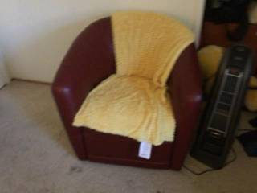

=== Step 0 Execution Feedback === [SUCCESS] Code executed in 24.69s. [Output] [VLM Q | thinking] In these images, identify which object is the 'nightstand', which is the 'paper', and which are the 'clothes'. Tell me which frames they appear in and describe them. [VLM A | thinking] Based on the images provided: * **Nightstand**: The dark-colored chest of drawers in **frame 0**, which holds a laptop, a digital clock, and picture frames. * **Paper**: A white sheet of paper resting on the wooden desk in **frame 2**. * **Clothes**: The striped fabric draped over the back of the chair in **frame 2**. Based on the images provided: * **Nightstand**: The dark-colored chest of drawers in **frame 0**, which holds a laptop, a digital clock, and picture frames. * **Paper**: A white sheet of paper resting on the wooden desk in **frame 2**. * **Clothes**: The striped fabric draped over the back of the chair in **frame 2**. [Variables] New/changed: frames_to_check: list, len=3 question: str answer: str [Inline Images] 3 image(s) attached below. Labels: frames_to_check [Tool Calls] 1 tool/VLM call(s) this step. [show() budget] 247/250 images remaining.
# 1. Locate objects in representative frames # Nightstand in frame 0 nightstand_box_norm = vlm.locate(InputImages[0], "Give the bounding box (x1, y1, x2, y2) in 0-1000 normalized scale for the dark chest of drawers. Reply with ONLY the numbers.") # Paper in frame 9 paper_box_norm = vlm.locate(InputImages[9], "Give the bounding box (x1, y1, x2, y2) in 0-1000 normalized scale for the white sheet of paper on the desk. Reply with ONLY the numbers.") # Clothes in frame 9 clothes_box_norm = vlm.locate(InputImages[9], "Give the bounding box (x1, y1, x2, y2) in 0-1000 normalized scale for the striped fabric draped over the chair. Reply with ONLY the numbers.") print(f"Nightstand box: {nightstand_box_norm}") print(f"Paper box: {paper_box_norm}") print(f"Clothes box: {clothes_box_norm}") def get_mask_from_norm_box(image, box_str, label): # Parse the box string try: box_norm = [float(x) for x in box_str.replace('[', '').replace(']', '').split(',')] except ValueError: return None # Convert to pixels W, H = image.width, image.height box_px = tools.Geometry.normalized_to_pixel(box_norm, W, H) # Segment return tools.SAM3.segment_image_by_box(image, box_px, label) # Generate masks for a few frames for robustness # Nightstand: frames 0, 1 seg_nightstand = [] for i in [0, 1]: m = get_mask_from_norm_box(InputImages[i], nightstand_box_norm, "nightstand") if m: seg_nightstand.append(m) # Paper: frames 8, 9 seg_paper = [] for i in [8, 9]: m = get_mask_from_norm_box(InputImages[i], paper_box_norm, "paper") if m: seg_paper.append(m) # Clothes: frames 8, 9 seg_clothes = [] for i in [8, 9]: m = get_mask_from_norm_box(InputImages[i], clothes_box_norm, "clothes") if m: seg_clothes.append(m) # Visual verification if seg_nightstand: show([InputImages[0], seg_nightstand[0].visualize(seg_nightstand[0].frame_indices[0])]) if seg_paper: show([InputImages[9], seg_paper[-1].visualize(seg_paper[-1].frame_indices[0])]) if seg_clothes: show([InputImages[9], seg_clothes[-1].visualize(seg_clothes[-1].frame_indices[0])])
[VLM Q | locate] Before answering, first check whether what the question describes is clearly visible in the provided image(s). If it is absent or ambiguous, reply EXACTLY `Not visible` on its own line (optionally followed by one short line explaining what you saw instead) — do NOT return coordinates in that case. Only if the requested target is clearly and unambiguously present, answer the request below. Request: Give the bounding box (x1, y1, x2, y2) in 0-1000 normalized scale for the dark chest of drawers. Reply with ONLY the numbers. [VLM A | locate] 445 108 1000 666 [VLM Q | locate] Before answering, first check whether what the question describes is clearly visible in the provided image(s). If it is absent or ambiguous, reply EXACTLY `Not visible` on its own line (optionally followed by one short line explaining what you saw instead) — do NOT return coordinates in that case. Only if the requested target is clearly and unambiguously present, answer the request below. Request: Give the bounding box (x1, y1, x2, y2) in 0-1000 normalized scale for the white sheet of paper on the desk. Reply with ONLY the numbers. [VLM A | locate] 205 352 345 417 [VLM Q | locate] Before answering, first check whether what the question describes is clearly visible in the provided image(s). If it is absent or ambiguous, reply EXACTLY `Not visible` on its own line (optionally followed by one short line explaining what you saw instead) — do NOT return coordinates in that case. Only if the requested target is clearly and unambiguously present, answer the request below. Request: Give the bounding box (x1, y1, x2, y2) in 0-1000 normalized scale for the striped fabric draped over the chair. Reply with ONLY the numbers. [VLM A | locate] 453 261 701 713 Nightstand box: 445 108 1000 666 Paper box: 205 352 345 417 Clothes box: 453 261 701 713
=== Step 2 Execution Feedback === [SUCCESS] Code executed in 12.71s. [Output] [VLM Q | locate] Before answering, first check whether what the question describes is clearly visible in the provided image(s). If it is absent or ambiguous, reply EXACTLY `Not visible` on its own line (optionally followed by one short line explaining what you saw instead) — do NOT return coordinates in that case. Only if the requested target is clearly and unambiguously present, answer the request below. Request: Give the bounding box (x1, y1, x2, y2) in 0-1000 normalized scale for the dark chest of drawers. Reply with ONLY the numbers. [VLM A | locate] 445 108 1000 666 [VLM Q | locate] Before answering, first check whether what the question describes is clearly visible in the provided image(s). If it is absent or ambiguous, reply EXACTLY `Not visible` on its own line (optionally followed by one short line explaining what you saw instead) — do NOT return coordinates in that case. Only if the requested target is clearly and unambiguously present, answer the request below. Request: Give the bounding box (x1, y1, x2, y2) in 0-1000 normalized scale for the white sheet of paper on the desk. Reply with ONLY the numbers. [VLM A | locate] 205 352 345 417 [VLM Q | locate] Before answering, first check whether what the question describes is clearly visible in the provided image(s). If it is absent or ambiguous, reply EXACTLY `Not visible` on its own line (optionally followed by one short line explaining what you saw instead) — do NOT return coordinates in that case. Only if the requested target is clearly and unambiguously present, answer the request below. Request: Give the bounding box (x1, y1, x2, y2) in 0-1000 normalized scale for the striped fabric draped over the chair. Reply with ONLY the numbers. [VLM A | locate] 453 261 701 713 Nightstand box: 445 108 1000 666 Paper box: 205 352 345 417 Clothes box: 453 261 701 713 [Variables] New/changed: nightstand_box_norm: str paper_box_norm: str clothes_box_norm: str seg_nightstand: list, len=0 i: int m: NoneType seg_paper: list, len=0 seg_clothes: list, len=0 [Tool Calls] 5 tool/VLM call(s) this step.
# 1. Generate masks in the frames they were located # Nightstand was located in frame 0 seg_nightstand = get_mask_from_norm_box(InputImages[0], nightstand_box_norm, "nightstand") # Paper and clothes were located in frame 9 seg_paper = get_mask_from_norm_box(InputImages[9], paper_box_norm, "paper") seg_clothes = get_mask_from_norm_box(InputImages[9], clothes_box_norm, "clothes") # 2. Perform 3D Reconstruction recon = tools.Reconstruct.Reconstruct(InputImages) # 3. Extract 3D centroids def get_robust_centroid(seg, recon): if seg is None: return None fi = seg.frame_indices[0] # We only have one frame per object here, so just get the centroid return seg.get_centroid_3d(recon, frame=fi, object=0) p_nightstand = get_robust_centroid(seg_nightstand, recon) p_paper = get_robust_centroid(seg_paper, recon) p_clothes = get_robust_centroid(seg_clothes, recon) print(f"Nightstand 3D: {p_nightstand}") print(f"Paper 3D: {p_paper}") print(f"Clothes 3D: {p_clothes}") # Visual verification of masks show([ InputImages[0], seg_nightstand.visualize(0) if seg_nightstand else None, InputImages[9], seg_paper.visualize(9) if seg_paper else None, InputImages[9], seg_clothes.visualize(9) if seg_clothes else None ])
Nightstand 3D: [ 0.6642834 1.6383868 -1.40848 ] Paper 3D: [0.60412234 0.5010488 1.1185184 ] Clothes 3D: [-0.045558 0.37122524 1.1123338 ] [image: show_0002]

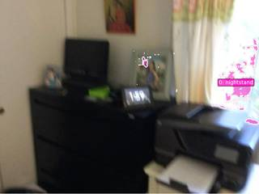

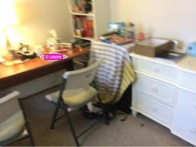
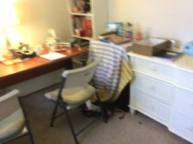
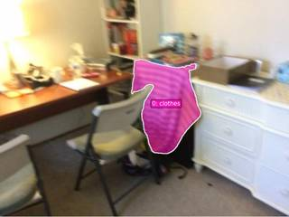
=== Step 4 Execution Feedback ===
[SUCCESS] Code executed in 6.81s.
[Output]
Nightstand 3D: [ 0.6642834 1.6383868 -1.40848 ]
Paper 3D: [0.60412234 0.5010488 1.1185184 ]
Clothes 3D: [-0.045558 0.37122524 1.1123338 ]
[Variables] New/changed:
recon: Reconstruction, frames=[0..9] (10 frames)
p_nightstand: ndarray, shape=(3,), dtype=float32
p_paper: ndarray, shape=(3,), dtype=float32
p_clothes: ndarray, shape=(3,), dtype=float32
seg_nightstand: PerFrameMask, frames=[0]
seg_paper: PerFrameMask, frames=[9]
seg_clothes: PerFrameMask, frames=[9]
[Inline Images] 6 image(s) attached below.
Labels: [
InputImages[0], seg_nightstand.visualize(0) if seg_nightstand else None,
InputImages[9], seg_paper.visualize(9) if seg_paper else None,
InputImages[9], seg_clothes.visualize(9) if seg_clothes else None
]
[Tool Calls] 1 tool/VLM call(s) this step.
[show() budget] 241/250 images remaining.# 1. Re-locate the nightstand (dark chest of drawers) in frame 0 # Visually, the dark chest of drawers is on the left side of the image. nightstand_box_norm = vlm.locate(InputImages[0], "Give the bounding box (x1, y1, x2, y2) in 0-1000 normalized scale for the large dark-colored chest of drawers on the left. Reply with ONLY the numbers.") print(f"Corrected Nightstand box: {nightstand_box_norm}") # 2. Generate corrected mask seg_nightstand = get_mask_from_norm_box(InputImages[0], nightstand_box_norm, "nightstand") # 3. Extract corrected 3D centroid p_nightstand = get_robust_centroid(seg_nightstand, recon) print(f"Corrected Nightstand 3D: {p_nightstand}") # 4. Relative Direction Calculation # We already have p_paper and p_clothes from the previous step # p_paper: [0.60412234, 0.5010488, 1.1185184] # p_clothes: [-0.045558, 0.37122524, 1.1123338] # Forward vector: Nightstand -> Paper v_fwd_raw = p_paper - p_nightstand v_fwd = v_fwd_raw / np.linalg.norm(v_fwd_raw) # Up vector (World Y) v_up = np.array([0, 1, 0]) # Right vector: Forward x Up v_right = np.cross(v_fwd, v_up) v_right = v_right / np.linalg.norm(v_right) # Target vector: Nightstand -> Clothes v_target = p_clothes - p_nightstand # Projections d_fwd = np.dot(v_target, v_fwd) d_right = np.dot(v_target, v_right) print(f"d_fwd: {d_fwd}, d_right: {d_right}") # Determine direction if d_fwd < -0.1: direction = "back" elif d_fwd > 0.1: if d_right < -0.1: direction = "front-left" elif d_right > 0.1: direction = "front-right" else: direction = "front" else: # d_fwd approx 0 if d_right < -0.1: direction = "left" elif d_right > 0.1: direction = "right" else: direction = "center" print(f"Calculated Direction: {direction}") # Visual verification of corrected mask show([InputImages[0], seg_nightstand.visualize(0) if seg_nightstand else None])
[VLM Q | locate] Before answering, first check whether what the question describes is clearly visible in the provided image(s). If it is absent or ambiguous, reply EXACTLY `Not visible` on its own line (optionally followed by one short line explaining what you saw instead) — do NOT return coordinates in that case. Only if the requested target is clearly and unambiguously present, answer the request below. Request: Give the bounding box (x1, y1, x2, y2) in 0-1000 normalized scale for the large dark-colored chest of drawers on the left. Reply with ONLY the numbers. [VLM A | locate] 108 448 668 1000 Corrected Nightstand box: 108 448 668 1000 Corrected Nightstand 3D: [-0.2737373 1.2563334 -1.4894302] d_fwd: 2.682345151901245, d_right: 0.6137600637223601 Calculated Direction: front-right [image: show_0003]
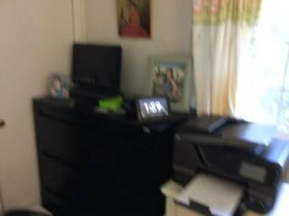
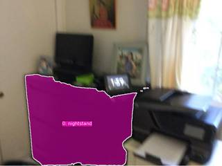
=== Step 5 Execution Feedback === [SUCCESS] Code executed in 5.21s. [Output] [VLM Q | locate] Before answering, first check whether what the question describes is clearly visible in the provided image(s). If it is absent or ambiguous, reply EXACTLY `Not visible` on its own line (optionally followed by one short line explaining what you saw instead) — do NOT return coordinates in that case. Only if the requested target is clearly and unambiguously present, answer the request below. Request: Give the bounding box (x1, y1, x2, y2) in 0-1000 normalized scale for the large dark-colored chest of drawers on the left. Reply with ONLY the numbers. [VLM A | locate] 108 448 668 1000 Corrected Nightstand box: 108 448 668 1000 Corrected Nightstand 3D: [-0.2737373 1.2563334 -1.4894302] d_fwd: 2.682345151901245, d_right: 0.6137600637223601 Calculated Direction: front-right [Variables] New/changed: v_fwd_raw: ndarray, shape=(3,), dtype=float32 v_fwd: ndarray, shape=(3,), dtype=float32 v_up: ndarray, shape=(3,), dtype=int64 v_right: ndarray, shape=(3,), dtype=float64 v_target: ndarray, shape=(3,), dtype=float32 d_fwd: float32, shape=(), dtype=float32 d_right: float64, shape=(), dtype=float64 direction: str [Inline Images] 2 image(s) attached below. Labels: [InputImages[0], seg_nightstand.visualize(0) if seg_nightstand else None] [Tool Calls] 1 tool/VLM call(s) this step. [show() budget] 239/250 images remaining.
ReturnAnswer("A")
[ReturnAnswer] Answer submitted: A